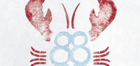
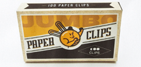
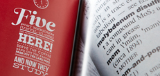
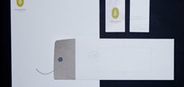

Big Box Little Box Award for Best Senior Portfolio
Chad Smith
University of North Texas
2nd Place Senior Portfolio
Lauren Schimming
University of Kansas
3rd Place Senior Portfolio
Justin Bell
University of Kansas
Dick Sloan Award for Best �Junior Portfolio
Anna DeFazio
University of North Texas
Best Sophomore Portfolio
Caleb Newberg
University of Kansas

Best of Show Sponsored by Fossil
Jessica Marak
University of Kansas

Stephen Zhang’s Judge’s Choice
Mercy Lomelin
University of North Texas
Eleanor Grosch’s Judge’s Choice
Natalia Zinser
University of North Texas
Ann Willoughby’s Judge’s Choice
Jessica Marak
University of Kansas
Jim Olvera’s Judge’s Choice
Christy Parrott, Jordan Spencer
Southern Methodist University

Barton Dalmer’s Judge’s Choice
Ryan Raschbaum
University of North Texas

Creative Summit Sponsored Best Concept
Collin Hall
Texas State University
1400 Words Sponsored Best Copywriting
Lauren King
Texas Christian University
Clampitt Paper Sponsored Best Use of Paper
Julie Keller
Texas Tech University

Best Logo
Collin Hall
Texas State University
Best Illustration
Mercy Lomelin
University of North Texas
Best Total Campaign
Justin Bell
University of Kansas

Best Book Cover/Spread
Danielle Aldrich
University of Kansas
Best Book Cover/Spread
Jessica Marak
University of Kansas
Best Broadcast Piece
Lauren Bernal
University of North Texas
Best Environmental Graphic
Lauren Schimming
University of Kansas
Best Group Project
Lauren Schimming, J. Marak, M. Stephens, T. Admas, A. DeFazio
University of Kansas
Best Magazine Cover/Spread
Maggie Hirschi
University of Kansas
Best Mobile App Design
Natalia Padilla
University of North Texas
Best Motion Graphic
Kyle Strope
Oklahoma State University
Best Packaging
Victor Rodriguez
Texas A&M University - Commerce
Best Photography
Mary Beth Koeth
Miami Ad School
Best Print Advertising
Lydia Flores
University of North Texas
Best Publication Design
Kenzie Tubbs
University of Kansas
Best Website Design
Kelli Fischer
University of North Texas
Best Brochure/Catalog
Bryan Lavery
University of North Texas
Best Brochure/Catalog
Kristin Sheehy
Texas Christian University

Best Letterhead
Jennifer Jennings
University of North Texas
Best Poster
Eric Lutz
Oklahoma State University
Golden Apple Award
Jeremy Shellhorn
University of Kansas
Best School
University of Kansas